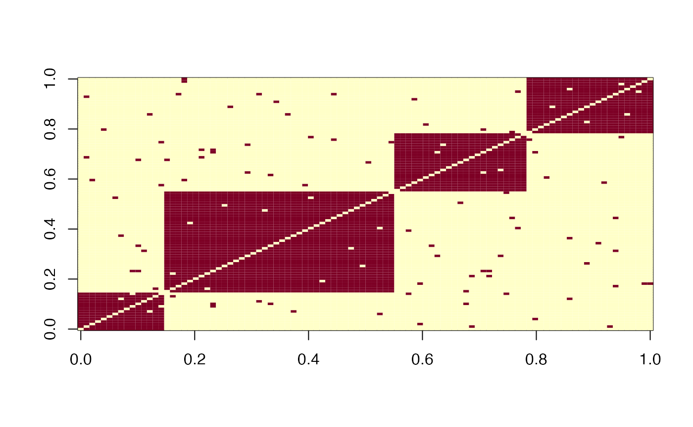
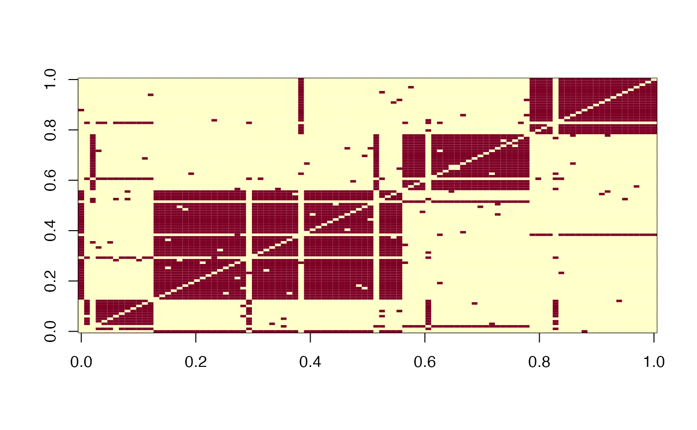

Simulations.Rmd
library(mimiSBM)First of all, we’ll start by specifying our parameters for simulating the data: N Number of observations V Number of views K Vector of size Q, indicate the number of clusters in each component. pi_k Vector of proportions of observations across the real clusters. rho Vector of proportion of views across components. sorted Boolean for simulation reordering (clusters and components membership). p_switch probability of label-switching, if NULL no perturbation between true clustering and the connectivity of individuals.
res <- rSMB_partition(N = N,V = V,K = K,pi_k = pi_k,rho = rho,sorted = sorted,p_switch = p_switch)With the plot_adjacencyfunction, adjacency matrices can be shown, and and linked to the parameters used for simulation.
#plot_adjacency(res$simulation$A)
image(res$simulation$A[,,1])
image(res$simulation$A[,,3])
image(res$simulation$A[,,10])
In this simulation, we have 3 types of adjacency matrices, depending precisely on the mixture from which they are derived. From the clusters variable in the simulation we can see the link between true clustering and that partially accessible through simulated views.
(clust <- res$params$clusters)
#> [[1]]
#> [[1]][[1]]
#> [1] 1 2 3
#>
#> [[1]][[2]]
#> [1] 5 4
#>
#>
#> [[2]]
#> [[2]][[1]]
#> [1] 4 1
#>
#> [[2]][[2]]
#> [1] 2
#>
#> [[2]][[3]]
#> [1] 5 3
#>
#>
#> [[3]]
#> [[3]][[1]]
#> [1] 4
#>
#> [[3]][[2]]
#> [1] 1
#>
#> [[3]][[3]]
#> [1] 5
#>
#> [[3]][[4]]
#> [1] 2 3This variable is difficult to understand at first glance, so we’ll explain its interpretation below.
length(clust)
#> [1] 3This variable is a list with as many arguments as the number of components.
Let’s take the example of the 1st element in the list:
clust[[1]]
#> [[1]]
#> [1] 1 2 3
#>
#> [[2]]
#> [1] 5 4The adjacency matrices resulting from the 1st component will therefore have 2 clusters. In addition, based on true clustering, we associate the cluster observed in this component: - Clusters 1, 2 and 3 are in fact a single cluster, cluster 1, of this component. - Cluster 4 and 5 correspond to the cluster 2 for this component.
If we look at the connection tensor linked to this simulation, we find the main structures observed previously.
#> [[1]]
#> NULL
#>
#> [[2]]
#> NULL
#>
#> [[3]]
#> NULLThis time we’ll set the label-switching to \(10\%\), the probability that an individual will be associated with the wrong cluster when the adjacency matrix is created.
res <- rSMB_partition(N = N,V = V,K = K,pi_k = pi_k,rho = rho,sorted = sorted,p_switch = p_switch)With the plot_adjacencyfunction, adjacency matrices can be shown, and and linked to the parameters used for simulation.
#plot_adjacency(res$simulation$A)
image(res$simulation$A[,,1])
image(res$simulation$A[,,3])
image(res$simulation$A[,,10])
Compared with the previous simulation, there’s a clear disturbance in the adjacency matrices. However, the main structures are preserved.
What’s more, here we can still recognize these structures because the observations have been ordered according to their clusters. If we replace the parameter with FALSE, we’ll not be able to recognize structures easily.
res <- rSMB_partition(N = N,V = V,K = K,pi_k = pi_k,rho = rho,sorted = FALSE,p_switch = p_switch)
#plot_adjacency(res$simulation$A)
image(res$simulation$A[,,1])
image(res$simulation$A[,,3])
image(res$simulation$A[,,10])